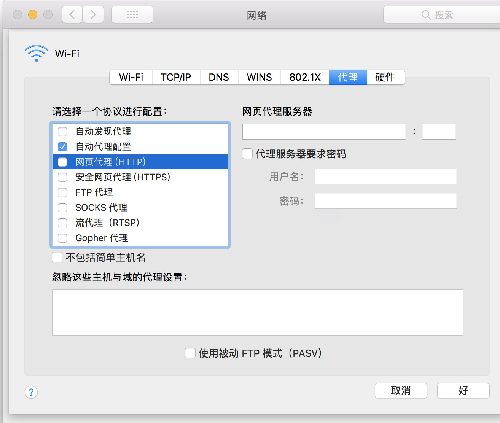
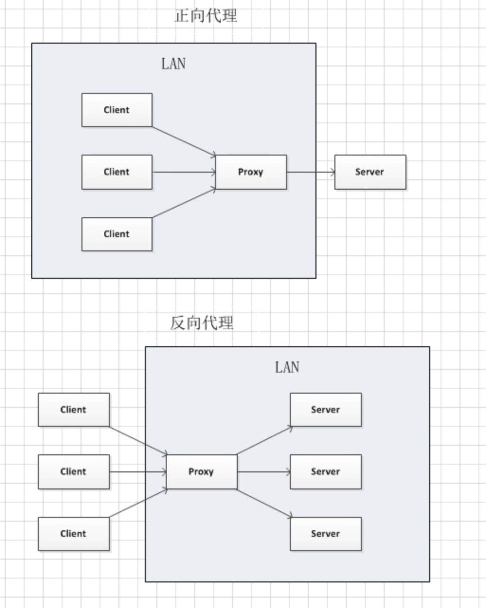
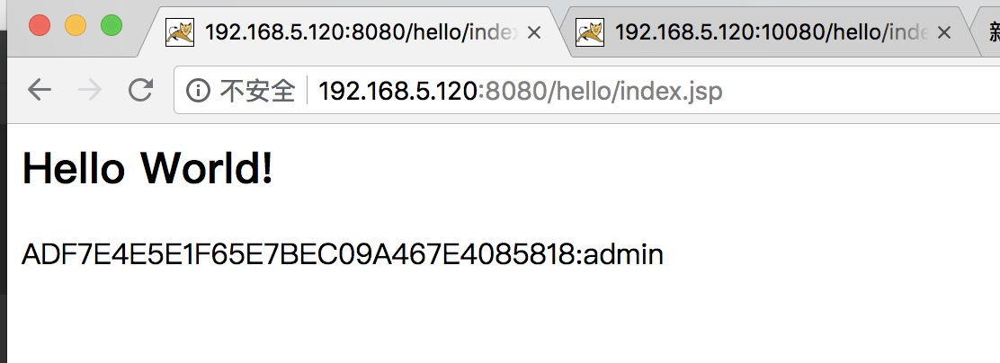
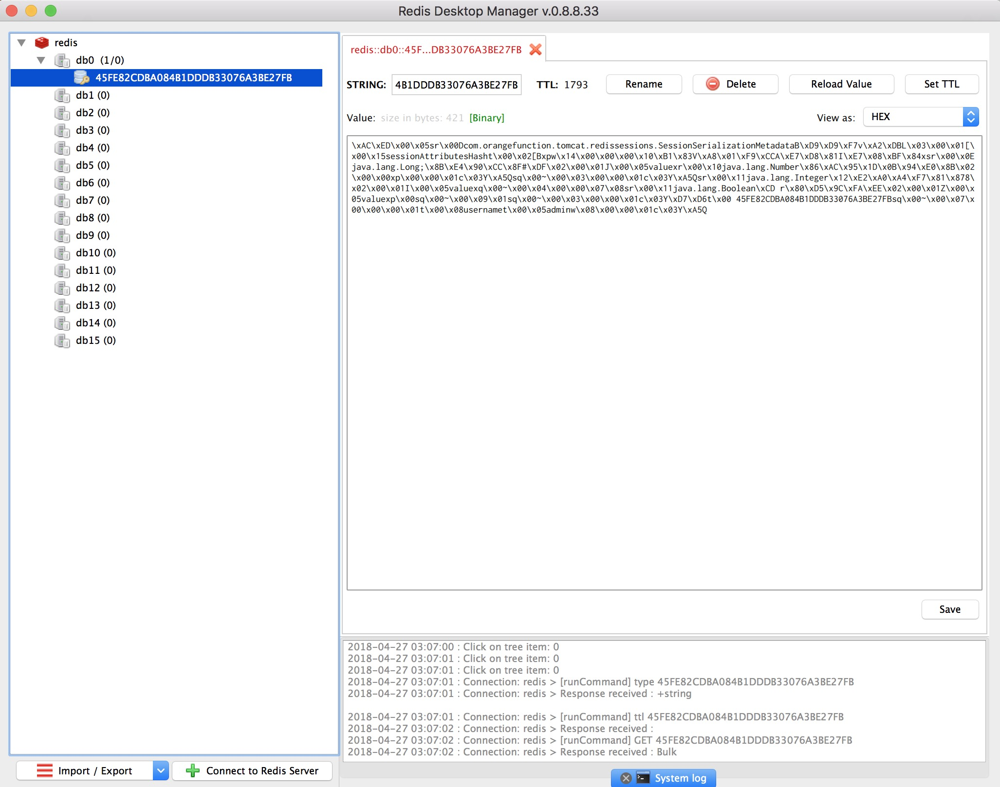

在实际应用中，往往会有这样的场景：访问并发量较高，单一web服务器压力过大，需要多个tomcat集群工作。或者利用多个服务器做灾备切换，以保证服务的可靠性，一台机器挂了，整个集群依然能正常对外提供服务。目前针对这样的应用场景，比较普遍的一种方式是利用高性能的nginx做代理服务器，做负载均衡，将请求转发到tomcat集群中的某台机器处理请求，然后再将结果返回。
在读这篇文章之前假设你对nginx有了一定的了解，也用过redis。
ngxin代理
Nginx是一款轻量级的Web 服务器/反向代理服务器及电子邮件（IMAP/POP3）代理服务器，并在一个BSD-like 协议下发行。其特点是占有内存少，并发能力强，事实上nginx的并发能力确实在同类型的网页服务器中表现较好，中国大陆使用nginx网站用户有：百度、京东、新浪、网易、腾讯、淘宝等。————来源于百度百科。
什么是正向代理？
通常一台机器借助于一台跳板机访问另外另一台机器，这台跳板机我们就称之为代理服务器。比如，我们访问不了google,但我们拥有一台国外的服务器B，我们可以访问这台服务器B，服务器B可以访问google。我们就可以借助于这台机器做代理，来访问google。之所以为称为正向，是因为我们自己的机器需要去设置代理与代理服务器建立连接组成一个局域网，让代理服务器代理我们的出入流量，我们与代理服务器交互，把网络请求都交给代理服务器，代理服务器请求资源获取响应后，将响应的结果返回给我们。比如我现在连接的wifi，我们也可以为其设置代理，指定要连接代理服务器的地址和端口，便可以将请求都转发到代理服务器。

什么是反向代理？
反向代理与正向代理最大的区别在于，反向代理服务器于目标服务器组成一个局域网，客户机不需要设置本地代理，只需要访问代理服务器就可以访问到目标资源。比如在内网搭建了一个集群的服务器，出于安全原因，不方便直接对外部提供服务。需要一台代理机器为其提供服务，外网用户直接访问该代理服务器就可以直接访问到内网的资源。
关于正反向代理的区别，网络上看到一张图，非常直观的表现了正反向代理的本质区别。

redis实现多tomcat session共享
redis是一个key-value存储系统。和Memcached类似，它支持存储的value类型相对更多，包括string(字符串)、list(链表)、set(集合)、zset(sorted set --有序集合)和hash（哈希类型）。这些数据类型都支持push/pop、add/remove及取交集并集和差集及更丰富的操作，而且这些操作都是原子性的。在此基础上，redis支持各种不同方式的排序。与memcached一样，为了保证效率，数据都是缓存在内存中。区别的是redis会周期性的把更新的数据写入磁盘或者把修改操作写入追加的记录文件，并且在此基础上实现了master-slave(主从)同步 —————————来源于《百度百科》
嗯，百科说了这么多，好像有点懵逼，其实就是一句话，redis是一个分布式的内存数据库。
首先要安装redis，不过安装就不想说了，吧啦吧啦，太多了，大多数软件安装都是一个套路，下源码./configure
然后：
1 | make && make install |
tomcat配置redis管理session
目前github有一个开源项目提供了redis管理tomcat的session的方案，需要先下载项目，自己编译jar包。
项目地址：https://github.com/jcoleman/tomcat-redis-session-manager
不过项目比较老了不支持tomcat8，作者已经不再维护了。
不过我们也可以编写自己的tomcat session管理器，将session存入redis。实现多个tomcat的session共享。
1 | <Context> |
tomcat/lib目录需要放入以下三个包：
tomcat-redis-session-1.0-SNAPSHOT.jar
commons-pool2-2.3.jar
jedis-2.7.2.jar
重新启动tomcat。此时访问tomcat，编写一个简单的登录的jsp页面
1 | <body> |
编写一个测试的servlet处理登录请求:
1 | package com.zjianhao.servlet; |
再编写一个跳转的页面index.jsp,打印出session和session中存储的用户名：
1 | <html> |
嗯，此时访问两台不同的tomcat页面，我们会惊喜的发现，session同步了，只要登录了一台，另一台不用登录就可以直接访问了。这样两台tomcat就可以进行无缝切换了。

在mac上有一个小工具可以查看存储在redis中的数据，借助于他我们可以检验session是否在redis中存储成功

配置负载均衡
在nginx的http模块中，配置
1 | upstream agentserver { |
upstream可以实现请求的负载均衡，会按照我们设定的权重，将请求分发到设置的server中，交由不同的服务器处理。listen让nginx监听本地80端口，访问本机80端口的请求都会转发到192.168.5.120上面的两个tomcat服务器上去。
这样我们就用nginx实现了一个反向代理，代理了两个tomcat，并且实现了集群的负载均衡和session共享。